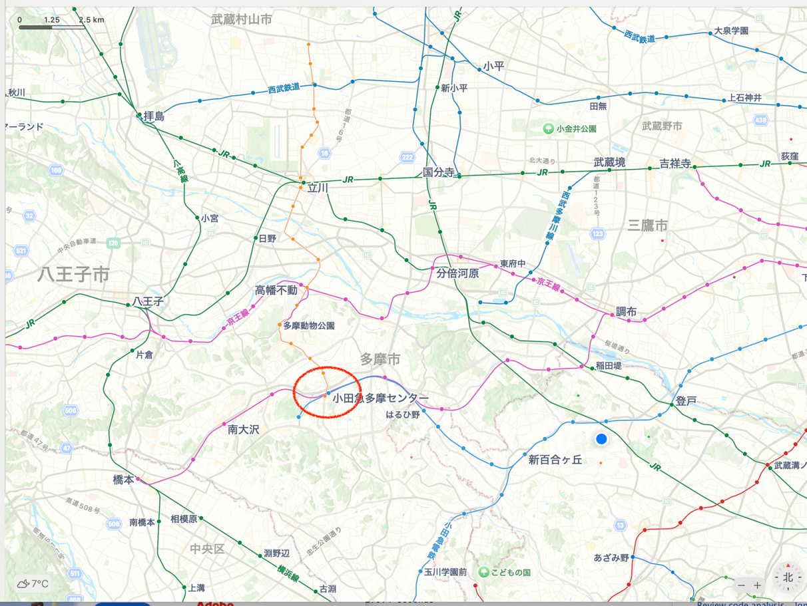

About
コンセプト
Ruby on Railsをはじめ、ウェブ開発全般について語り合ったり、意見交換したりします。
どんなことをやるの？
例えばこんなこと...
- 最新話題のキャッチアップ (Ruby, Rails, Reactなど)
- 注目の英文ニュースレターやX上のポスト、Zenn, Qiitaの記事を取り上げて、意見交換します。 例えばHotwire Nativeとか、Reactのフレームワークとか、Next.jsのセキュリティとか、RailsのSolid ３点セットとか。
- Hotwireを語る
- Railsデフォルトのフロントエンドの使いこなし方を探求します
- 個人で作ったものを語る
- Kamalを使ったデプロイ、ReactとRailsの統合
- 37signalsのBasecampを触ろう
- Basecampを触り、設計やUI/UXを語る
- もくもく会
場所は？
多摩センター駅近くの極楽の湯。人数が増えたら場所を変えます。
連絡方法は？
Railsを学ぶものとして、Railsのゆりかご37signalsのBasecampで会を運営しています。 参加希望された方は、Kanagawa.rbのBasecampプロジェクトに参加していただき、そこで連絡をします。 (予備のSlackチャンネルもあります)
オンライン配信は？
今のところはオンライン配信を考えていません。